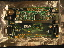
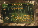
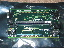
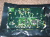

TINI Controlled Fan
Why? I was bored. Really. Well, that and I had most of the junk lying around. Just asking to be used. So I guess that had some relevance as well.
What? The TINI is the brains. A Thermochron button records the temp inside the apartment. X10 controls that window fan. The TINI looks up the outside temp via internet, and if this temp is over 60 but less than the inside temp, the window fan is switched on. Else it is off.
That's the idea anyways. Maybe in the future I'll rig it with a second temp sensor to get the actual temp outside my apartment.
Now this is all good and fine until the first stumbling block. For a computer to X10 interface, all I have is the Firecracker. This neat little block utilizes the DTR and RTS lines to send RF signals to a X10 base that then sends it over the power lines. The problem then?
The TINI supports four serial lines. The first two are driven by internal UARTs and for simplicity, are only RX/TX lines. And that rather complicates things if you want to use the DTR and RTS lines.
Good thing is that the other two serial lines will have DTR and RTS lines. Too bad that they also require a bunch of other parts. Well, its not that bad. Its just a bunch of stuff that I have to buy, then sodder. (well, I won't sodder these. Lots of surface mount stuff. Got my brother to do it, since at his work they have spiffy nice equipment that makes it a snap to do.)
I've got some pictures of the TINI main board before and after we added the extra parts. We added a lot more than just what was needed. This is because Digi Key has a minimum order of $25, and the electronic parts were really cheep.
Before:
Front

Back

After:
Front

Back

{kind=link}
{kind=link}
{kind=link}
{kind=link}
As a side note to this adventure. While it is true that java on embedded devices is a neat idea and all in theory. It makes a great many things way more difficult than they need to be for a simple application as this.
I've got all the various parts of code done. I can turn the fan on and off. Get the temp from NOAA, and the Thermochron button. Just got to roll it all together. Just need to stop playing with the web site stuff and get back to playing with this.
Update [Tue Sep 9 17:41:23 CDT 2003]:
bleh. The code to fetch the data from NOAA via ftp gags once and a
while. And after running long enough, it will splatter all of the tcp/ip stuff on the TINI.
This is throwing a bit of a wrench into the works.